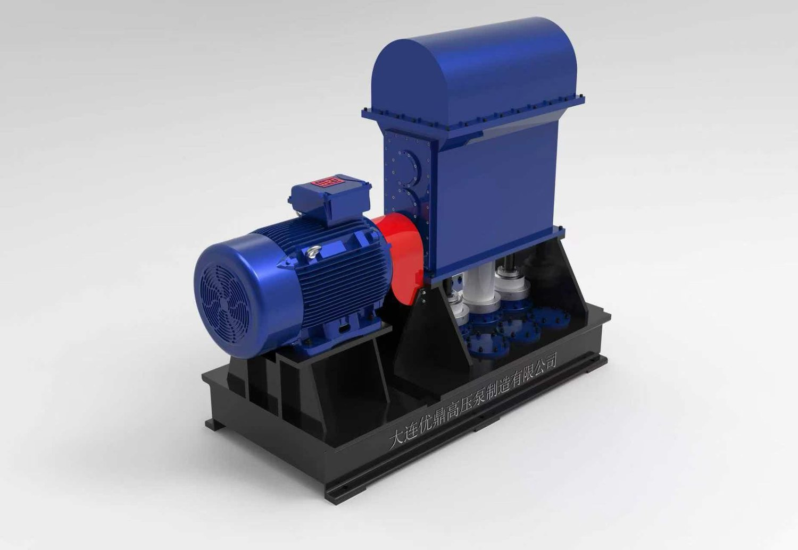

压滤机入料
进料与保压阶段压力稳定，周期更短，滤饼更干。
压滤机入料 →V5 系列 · 立式五柱塞
100–400 m³/h，扬程最高 150 m，固料重量浓度 30% 以上。机械式五柱塞结构，配陶瓷柱塞与合金阀座——用来替换几周就磨穿的离心浆料泵，以及白白浪费三分之一电能的液压陶瓷柱塞泵。

问题在哪
在选矿厂，浆体输送是公认的薄弱环节：离心浆料泵被磨蚀，电费跟着效率曲线一路下滑。
磨损
磨蚀性浆体下的叶轮与泵壳寿命，取决于颗粒粒径与流速。每次返修都是一次停产。
效率
离心浆料泵在间隙被磨开后的实际运行效率。剩下的能量都变成了热和噪声。
电耗
一台中型浆料泵按工业电价折算的年电费——其中大部分损失在低效率上。
V5 的答案
V5 不把磨蚀性颗粒甩到高速旋转的叶轮上，而是用五个立式柱塞缓慢推送。流速低，磨损就只取决于直接接触的过流零件材质，而不是整条水力通道。
结果：效率高于 83%——比离心浆料泵高出 33 个百分点以上，同工况电耗约为一半。
| 参数 | V5 五柱塞 |
|---|---|
| 流量 | 100–400 m³/h |
| 扬程 | 最高 150 m |
| 排出压力 | 最高 1.5 MPa |
| 固料浓度 | 重量浓度 ≥30% |
| 效率 | >83% |
| 易损件寿命 | 4,000 h+ |
| 大修周期 | 30,000 h+ |
| 驱动方式 | 机械曲轴，无液压站 |
以上为参考工况区间；最终选型取决于粒径分布、密度与 pH。
对比
| 离心浆料泵 | 液压陶瓷柱塞泵 | V5 机械柱塞泵 | |
|---|---|---|---|
| 效率 | 25–50% | 65–70% | >83% |
| 磨损寿命 | 15 天 – 6 个月 | 中等 | 易损件 4,000 h+ |
| 液压站 | 无 | 有——油、冷却、过滤 | 无 |
| 维护 | 频繁返修 | 回路复杂 | 现场更换易损件 |
| 高浓度（>30%） | 差 | 好 | 好 |
V5 针对磨机排矿、压滤机入料与尾矿的常见粒径设计。询价时请附粒径分布——阀座与阀球选型取决于它。
100–400 m³/h、扬程 150 m 以内的浆体工况够用。需要更高压力时，可选 UDZ 多柱塞系列，最高 70 MPa。
易损件现场更换，以小时计，不是以天计。30,000 小时的大修是计划检修，不是抢修。